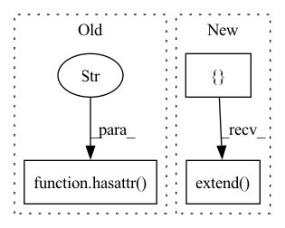

Pattern ID :12218

Before Change
return model.parameters()
else:
critic_parameters = model.critic.parameters()
if hasattr(model, "critic2"):
critic_parameters += model.critic2.parameters()
return critic_parameters
After Change
if isinstance(model, Critic):
return model.parameters()
else:
params = []
for critic in model.critics:
params.extend(critic.parameters())
return params
def run_optimizer(
self,
In pattern: SUPERPATTERN
Frequency: 3
Non-data size: 3
Instances
Fragment ID: 41381792
Project Name: londonnode/pearl
Commit Name: c59fe3a3372d8bfd767f2a9a0a3b36ff28c3d1f1
Time: 2022-01-05
Author: rohan.tangri@gmail.com
File Name: anvilrl/updaters/critics.py
M Class Name: BaseCriticUpdater
N Class Name: BaseCriticUpdater
M Method Name: _get_model_parameters(2)
N Method Name: _get_model_parameters(2)
M Parent Class: ABC
N Parent Class: ABC
M File Name: anvilrl/updaters/critics.py
N File Name: anvilrl/updaters/critics.py
M Start Line: 40
M End Line: 43
N Start Line: 38
N End Line: 41
'>
Before Change
max_dots = 33
hip_version = None
if hasattr(torch.version, "hip"):
hip_version = torch.version.hip
report = [
After Change
def debug_report():
max_dots = 33
report = [
("torch install path",
torch.__path__),
("torch version",
torch.__version__),
("deepspeed install path",
deepspeed.__path__),
("deepspeed info",
f"{deepspeed.__version__}, {deepspeed.__git_hash__}, {deepspeed.__git_branch__}"
)
]
if get_accelerator().device_name() == "cuda":
hip_version = getattr(torch.version, "hip", None)
report.extend([("torch cuda version",
torch.version.cuda),
("torch hip version",
hip_version),
("nvcc version",
(None if hip_version else nvcc_version())),
("deepspeed wheel compiled w.",
f"torch {torch_info["version"]}, " +
(f"hip {torch_info["hip_version"]}"
if hip_version else f"cuda {torch_info["cuda_version"]}"))])
else:
report.extend([("deepspeed wheel compiled w.",
f"torch {torch_info["version"]} ")])
print("DeepSpeed general environment info:")
for name, value in report:
print(name, "." * (max_dots - len(name)), value)
'>
Fragment ID: 41381791
Project Name: microsoft/deepspeed
Commit Name: 9548d48f48a53b97bdbeada374b7f35ad2f1c655
Time: 2023-01-06
Author: guokai.ma@gmail.com
File Name: deepspeed/env_report.py
M Class Name: AnonimousClass
N Class Name: AnonimousClass
M Method Name: debug_report(0)
N Method Name: debug_report(0)
M Parent Class:
N Parent Class:
M File Name: deepspeed/env_report.py
N File Name: deepspeed/env_report.py
M Start Line: 82
M End Line: 106
N Start Line: 83
N End Line: 108
'>
Before Change
stride_index = torch.tensor(
self.stride[0] - len(state_buffer) - 1 + self.padding[0]
)
if not hasattr(self, "state_buffer"):
self.register_buffer("state_buffer", state_buffer, persistent=False)
return state_buffer, state_index, stride_index
After Change
first_output: Tensor,
) -> State:
padding = self.make_padding(first_output)
repeat_shape = [self.kernel_size[0] - 1]
repeat_shape.extend((1,) * len(self.input_shape_desciption))
state_buffer = padding.repeat(repeat_shape)
state_index = 0
stride_index = self.stride[0] - len(state_buffer) - 1 + self.padding[0]
'>
Fragment ID: 41381790
Project Name: lukashedegaard/continual-inference
Commit Name: 1e6964a31874287527720453b1c9216ddedd5a01
Time: 2022-11-29
Author: lh@eng.au.dk
File Name: continual/conv.py
M Class Name: _ConvCoNd
N Class Name: _ConvCoNd
M Method Name: init_state(2)
N Method Name: init_state(2)
M Parent Class: _ConvNd,CoModule
N Parent Class: _ConvNd,CoModule
M File Name: continual/conv.py
N File Name: continual/conv.py
M Start Line: 125
M End Line: 135
N Start Line: 133
N End Line: 138